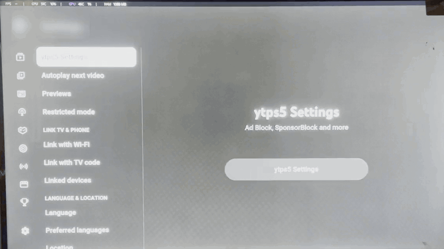

In-player ad filtering
Ad objects are removed before the player UI renders them, so playback starts on the video instead of an ad break.
ytps5 is a free, open-source runtime mod for the official PS5 video app on jailbroken consoles. It filters in-player, feed and hero ads, skips SponsorBlock segments, and adds a native settings panel — without distributing app packages, console keys, DRM tools, or copyrighted files.
Memory-only patch · run once per boot · re-patches every app launch · GPL-3.0
PPSA01652.
The Y2JB apps PPSA01650/PPSA01651 are refused by
default; patching them needs an explicit opt-in. Use at your own risk; no
warranty.

Everything runs in the app's process memory. Nothing is written to the installed package, save data, or the Y2JB autoloader.
Ad objects are removed before the player UI renders them, so playback starts on the video instead of an ad break.
Sponsored cards in the home feed and hero shelf are filtered out, leaving the recommendations you actually asked for.
Segments are fetched from the public SponsorBlock API through a local proxy and skipped automatically, with a toast on screen.
The app's own settings screen gains a ytps5 Settings entry: Ad Block, SponsorBlock, and per-category toggles.
A toast appears when a newer release is published. The check reads version.json from the repository through the local proxy.
Run the installer once per boot. The injector waits for the app, patches each launch, and clears completely when the console restarts.
The injector checks the title before patching and refuses the Y2JB daily drivers on purpose.
| App | Role | Status |
|---|---|---|
PPSA01650 | Y2JB daily driver | Leave for Y2JB — refused by default |
PPSA01651 | Y2JB daily driver | Leave for Y2JB — refused by default |
PPSA01652 | Clean player | Recommended — tested on FW 8.20 |
other PPSA0165x | Native PS5 app | Untested — select with patch_title=AUTO |
CUSA01116 | PS4-compatibility app | Unsupported |
The release is a single file that embeds the proxy and injector. It only uses loopback to hand them to the console's own elfldr.
ytps5.elfUse the latest release on GitHub. Do not use a mirror or a reupload.
Any folder Payload Manager can read is fine.
Add or upload ytps5.elf, then run it.
You should see “ytps5: waiting for PPSA01652” (or your configured title).
PPSA01652 by default. It freezes for a moment while the hook is installed, then shows “ytps5: hook installed”.
Payload Manager: add ytps5.elf to autoload.txt. etaHEN: add it to the payload autoload list.
On first run, ytps5 writes a commented config file. Keep the Y2JB app for Y2JB and patch the clean player.
# /data/ytps5-sponsorblock/config.txt
patch_title=PPSA01652 # PPSA01650 | PPSA01651 | PPSA01652 | AUTO
allow_y2jb=0 # 1 = allow patching PPSA01650/PPSA01651PPSA01650, patch the clean player: patch_title=PPSA01652 (default).PPSA01651, patch PPSA01650: patch_title=PPSA01650 and allow_y2jb=1.PPSA0165x appears: patch_title=AUTO. Y2JB titles are still refused unless allow_y2jb=1.Edit the file over FTP (port 2121) or the console file manager, then restart ytps5.elf. Patching a Y2JB app can break the jailbreak/autoload chain; only opt in if you have a second clean app for Y2JB.
ytps5 attaches with libhijacker, installs a position-independent trampoline on HTMLScriptExecute, and prepends a JavaScript payload to scripts under 512 KB.
The injector finds the clean app process and suspends it before touching executable memory.
A 14-byte jump is installed at the HTMLScriptExecute entry, with a trampoline that runs the original instructions.
The payload runs in the page context. When the app closes, the injector waits for the next launch and patches it again.
Short answers. The repository has the full disclaimer and troubleshooting notes.
On a jailbroken PS5, run ytps5.elf once with Payload Manager, then open the clean app PPSA01652. ytps5 filters in-player, feed and hero ads in memory and does not patch the installed app package.
Firmware 8.20 with PPSA01652 is the only tested combination. Other firmware or app builds are untested because the HTMLScriptExecute signature can differ.
Yes. ytps5 attaches to the running app with libhijacker and patches the process in memory. It does not run on stock firmware.
Yes. It is GPL-3.0, with no paywalled features, account, or telemetry. GitHub Sponsors is optional and does not change the license.
Not by default. Those are commonly used as Y2JB daily drivers and are refused unless you set patch_title to one of them and allow_y2jb=1 in /data/ytps5-sponsorblock/config.txt. The recommended setup is to leave the Y2JB app alone and patch a clean app such as PPSA01652.
Yes. SponsorBlock segments are fetched from the public API through the local proxy and skipped with a toast. Categories can be toggled in ytps5 Settings.
It targets the native PS5 app on FW 8.20. PS4-compatibility titles such as CUSA01116 and untested hardware are unsupported.
Reboot the console, or close the app. The patch is memory-only and is not written to the app, save data, or download0.dat.
/data/ytps5-sponsorblock/ contains relay.log, injector.log, and proxy_server.log. Attach them to bug reports with your firmware and title ID.
PPSA01650 and PPSA01651 by default because those are commonly used as Y2JB daily drivers. Patching them requires an explicit allow_y2jb=1 opt-in and is unsupported.